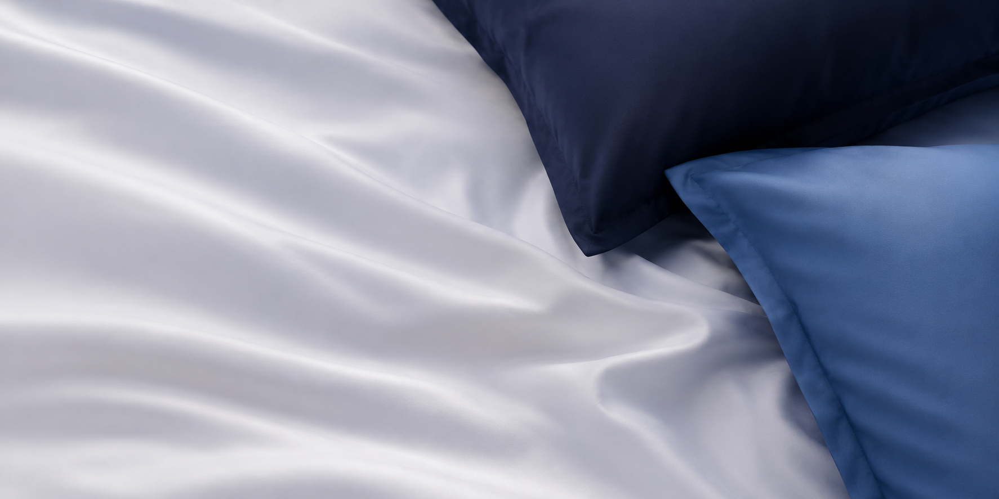

Streamline your entire digital workflow with FosterX. From strategy to execution, unlock the full potential of social media to elevate your marketing, boost productivity, and drive results across your entire organization.
Streamline your entire digital workflow with FosterX. From strategy to execution, unlock the full potential of social media to elevate your marketing, boost productivity.
Send mailYes. The Dr.Prime Cervical Neck Pillow comes with a limited warranty that covers manufacturing defects and material failures. We stand behind the quality of every pillow we sell and we want every customer to have complete confidence in their purchase.
The warranty covers manufacturing defects including abnormal loss of foam support, visible material breakdown that is not caused by misuse, stitching or zipper failure under normal use conditions, and defects in the cover fabric that appear under normal washing and use. If your pillow fails because of how it was made we will make it right.
The warranty does not cover normal wear and tear over time, damage caused by improper care such as machine washing the foam core, stains or odors from use, damage from exposure to excessive heat or direct sunlight, physical damage caused by misuse or accidents, and changes in firmness preference over time. The warranty is for product defects — not for personal comfort preferences.
The Dr.Prime Cervical Neck Pillow is covered for a period of 1 year from the date of purchase. We recommend keeping your Amazon order confirmation as proof of purchase date.
The D stands for density — pounds per cubic foot. Most budget and mid range memory foam pillows use 40D or 50D foam. 60D is higher density, meaning more foam material per unit of space. In practical terms this means better orthopedic support, better shape retention over time, and a pillow that lasts significantly longer. Low density foam compresses and flattens within months. 60D foam holds its shape for years with proper care.
CertiPUR-US is an independent nonprofit certification program for polyurethane foam. Certified foam has been tested by accredited independent laboratories and confirmed free from ozone depleters, PBDE flame retardants, mercury, lead, other heavy metals, formaldehyde, phthalates, and harmful VOC emissions. If a pillow does not carry this certification you have no third party assurance about what chemicals are in the foam you are sleeping on every night. The Dr.Prime foam is CertiPUR-US certified.
OEKO-TEX Standard 100 is one of the most rigorous independent textile safety certifications in the world. Every single component of a certified product — threads, dyes, zippers, and fabric — is tested by an accredited laboratory for over 100 harmful substances. A product with this certification has been confirmed safe for direct skin contact. The Dr.Prime cover fabric is OEKO-TEX Standard 100 certified — everything touching your skin during sleep has been independently tested and approved.
ISPA is the International Sleep Products Association — the leading trade body for the sleep products industry in the United States. ISPA recognition places Dr.Prime alongside established US sleep brands and signals a level of industry credibility that most generic Amazon sellers cannot claim.
The cover and foam core must be cared for separately. To clean the cover: unzip it, remove it from the foam, and machine wash on a gentle cold or warm cycle with mild detergent. No bleach. No fabric softener. Air dry or tumble dry on low heat only. To clean the foam core: do not put it in the washing machine. Spot clean only using a damp cloth with a small amount of mild soap. Gently dab the area and allow to fully air dry in a ventilated space before reassembling.
Every 2 to 4 weeks as part of your regular bedding routine. Regular washing removes sweat, skin oils, dead skin cells, and dust mites. A clean cover also protects the foam core from absorbing these substances over time.
Low heat only. High heat can shrink the Nylon Spandex fabric or damage its stretch and cooling properties. Air drying flat is always the safest option. If using a dryer remove while still slightly damp and finish air drying.
No. Direct iron heat will damage the Nylon Spandex fabric. Smooth the cover out after washing and allow it to air dry — wrinkles will release naturally.
Place the pillow on your bed and rest your head naturally on the contoured surface. The ergonomic shape will support your head, neck, and shoulders in whichever position you sleep in. If you are new to cervical pillows give yourself 5 to 14 days to adjust — your neck muscles need time to adapt to proper alignment. Most people notice a clear improvement in morning comfort within the first two weeks of consistent use.
Yes, this is completely normal in the first 5 to 14 days. Your muscles have been conditioned to sleeping in a misaligned position for a long time. When proper alignment is introduced those muscles begin to adapt, which feels like mild soreness — similar to how your body responds when correcting any long standing postural habit. This passes. If discomfort is severe or does not improve after two weeks consult your doctor.
Most people notice improvement in morning neck stiffness and shoulder soreness within 1 to 2 weeks of consistent nightly use. Some notice it within the first few nights. The key is consistency — using the pillow every night without switching back to your old pillow, which resets the adjustment process.
Memory foam responds to body heat. In the first few nights it may feel firmer, especially in cooler temperatures. As it warms up during sleep it becomes more responsive and conforms more closely to your shape. Give it a full two weeks of nightly use. The support level is intentional — this is an orthopedic pillow, not a soft comfort pillow.